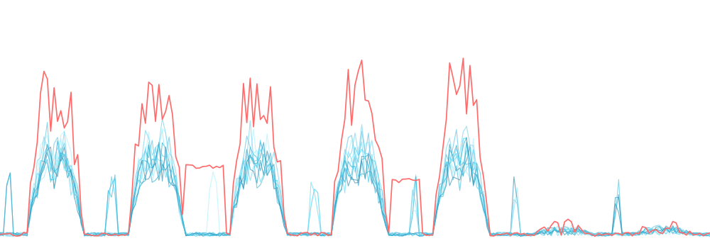

Is the system healthy right now?
- Continuous operation
- Known signals and thresholds
- Dashboards and alerts
Software-EKG is a workbench for the dynamic analysis of complex, distributed systems. For troubleshooting, it lays the runtime behaviour of their servers, processes and applications on top of each other across days, weeks or releases, and reveals anomalies in their interplay that monitoring does not catch, because each system on its own looks normal. The AI Assistant is a sparring partner: it helps form hypotheses about what stands out and verify them against the data.
Ready-made packages with their own Java runtime. Unpack and start.

Monitoring continuously answers whether known conditions are healthy. Software-EKG helps an analyst find what is different in this case—between systems, time periods and releases, even when no alert has fired.
Not a dashboard. Not alerting. Not a replacement for Prometheus or Grafana. An instrument for performance analysts, architects and experts—with AI support for rookies and with verification that avoids misdiagnoses.
The name is meant literally: EKG is the German abbreviation for an electrocardiogram (ECG). Just as an ECG records the signals of the heart over time, Software-EKG records the measurements of the systems that together form a distributed system. The core is comparison, and many patterns lie within every threshold that would trigger an alert.
Why does the heap grow steadily on three out of fifty systems?No threshold is violated. It only stands out next to the other 47.
Why does a load pattern occur every fourteen days?Visible only when the period is long enough.
Why did the behaviour change after a particular release?Since when exactly, and on which systems?
Why do two systems that should be identical show different curves?Same software, same load, a different curve.
Experienced analysts recognise such patterns through practice. To many others, they initially remain just curves. The AI Assistant is the sparring partner that was missing: it helps form hypotheses and check them against the data. The decision remains with the human.
Large distributed applications cross organisational boundaries: different suppliers, providers and operations teams. Each of them looks at its own part, and each part is fine. The customer is still left stranded, because the application does not work, is unstable or fails sporadically.
“Our software runs.”
“No incident on the platform.”
“All dashboards are green.”
“It still fails. Sporadically.”
Software-EKG puts the measurements of all parties on one time axis, in one local data set and independent of whose monitoring they come from. Where there is no direct access, an external collector runs inside the boundary and its collection crosses it as CSV files, for example on a share. What nobody sees within their own boundary becomes visible in the comparison: which system, since when, in step with what. The result is not blame but a well-founded question to the right team.
The CPU load of the WebLogic instances wls1 and wls2 on five nodes of a cluster, 1 to 9 March 2015, as hourly means, selected by wildcards into one view.
The cause was the load balancing in the client, a native Java application. The node did receive more load, but the cause was not on the servers. The picture led to the right node and to the right question; the answer took knowledge of the architecture. Two independent load balancing mechanisms did not work, so a change in one place did not fix the problem, it only changed it. The application kept running, if with odd response times; nothing showed in the logs, and operations had ignored it. Only the recording made both faults visible and led to two tests: one for the WebLogic load balancer and one for the load balancer of the application, which has to distribute onto the nodes.

The investigation is assembled for one concrete case. There is no permanently prescribed monitoring catalogue; the question that emerges during comparison determines which measurements matter.
Import from Prometheus, or let the collector read system metrics, JMX and logs via SSH. The data then lies locally, in the embedded Solr.
Put many time series into one picture by wildcard, change the time window, add further systems. Often the question only emerges while comparing.
Preserve the view in which something stands out: which server, which period, compared with what.
The AI Assistant helps form hypotheses about what stands out and checks them against the raw data, with evidence and counter-evidence.
The chart as PNG, the values as Excel: evidence for the report or presentation in which the finding belongs.
After that, you go deeper where it counts. Memory profilers, CPU profilers or network tracing tools are used for exactly the component and period that stood out in the metric analysis.

The idea is more than 15 years old and has been developed further ever since. Most recently, version 7.x added AI support.
The tool always had a barrier: experienced analysts, architects and performance engineers recognise patterns in dense charts that beginners easily miss. Without an expert at hand, most users were overwhelmed as soon as the curves seemed to contradict each other, because the tool offered no explanation for the situation.
The built-in AI Assistant fills that gap as a sparring partner. It is not comprehensive enough to be handed the whole analysis. But it works on the same data, helps form hypotheses, and checks questions and hypotheses against the measurements, with evidence and counter-evidence.
The check also guards against misdiagnosis: findings whose cause is a different one than the obvious. When memory runs out, the heap is often not simply configured too small. It can be normal, with more users on the system, or abnormal: a memory leak, or memory that multiplies with the number of users.
The assistant talks to an OpenAI-compatible endpoint, at present OpenRouter with a Claude model; the API key comes from OPENROUTER_API_KEY. What it is shown goes to that service. AI output is a hypothesis aid, not collected evidence.
Many have an ECG. But there are only a few chief physicians who can really draw conclusions from it.
A JavaFX application for your own machine: explorer, filter header, chart, legend and AI Assistant. Navigation between hundreds of series, without programming.

web* as host and \Cpu\* as metric: every CPU value of every web server in one chart, with exclusions. Cloud-native projects add namespace, service, pod and container.

Charts in the background keep their own value axis. That lets requests per second and milliseconds share a picture: the fewer requests the server answers, the longer it takes.

One series becomes the measure of 100 percent, the others are shown relative to it: web02 constantly a little below, web03 above it until it falls to 55 percent.

The same series in four chart types. Smoothing and granularity can be chosen per query; a bookmark remembers the type of its chart.

Through the HTTP API, raw samples instead of condensed steps. The series are copied into the local repository, or stay in Prometheus and are fetched when a chart needs them.
The filters that select its series, and the time range. The view can be opened again and changed.
The picture for the incident report, the values for independent checking. The document itself is written where it belongs.
At display time every series is reduced to a fixed number of points: value change, LTTB and Douglas-Peucker. The raw data stays stored.
Embedded Solr on your own machine; Solr, Elasticsearch or ClickHouse as a remote repository. Production is not loaded again with every look.
The collector is an adapter between the systems that already expose their values somewhere and the repository the workbench analyses. You do not need it for a first chart, because the workbench has one of its own. The standalone collector is there for where direct access ends: in corporate environments, direct access is often more problematic than letting a Java process run somewhere and putting its data on a share. It runs on a server, a jump host or a Raspberry Pi.
Log lines become time series. A metric is a regular expression, its series the number of matching lines per interval. What an application only writes into its log was never a metric anywhere.
A source is a small plugin. The bundled mock source is one class of about 90 lines and a ServiceLoader entry. A coding agent writes such a source for a proprietary interface in minutes.
The collector in the handbook →metricGroups: host: type: unix # top via SSH metrics: - '\CPU\us' - '\Load\one' processGroups: system: - name: global source: '${REF:hostAddress}:22' hostGroups: db: username: ekg password: '${ENV:EKG_SSH_PASSWORD}' hosts: [db-01, db-02] collectors: # what × where × how often - metricGroup: host processGroup: system hostGroup: db interval: 15s
Every entry under collectors is multiplied out into one job per host and process. The names of the groups later are dimensions of every series: what you compare by.


What Software-EKG leaves to other tools, and what it does not promise.
Dashboards and alerts on the running system remain the job of tools such as Grafana.
The workbench has a live display, but it mainly confirms that data is arriving.
It is an anomaly verifier with hypothesis formation: the human notices what stands out; the assistant helps form hypotheses and check them against the data.
The picture leads to the right server and to the right question. The answer is often not in any time series; it takes knowledge of the architecture.
| Tool | Optimised for | Software-EKG, by contrast |
|---|---|---|
| Grafana | Dashboards and alerts on the running system | Analysis afterwards, locally, with many series in one picture |
| Prometheus and long-term storage such as Thanos or Mimir | Collecting, retaining and querying | A local data set prepared for interactive comparison |
| AI SRE agents | Narrowing down an incident autonomously as soon as an alert fires | The human notices and decides; the assistant helps form hypotheses and verifies them against the data |
| Notebook or coding agent on exported data | Answering a specific question with code | Navigation between hundreds of series without programming, in a growing data set |
The differentiation is based on purpose, not on weaknesses of the other tools. It has not been shown that Software-EKG is better for this kind of analysis than the alternatives; only a reproducible comparison can show that. The whole positioning
Ready-made packages, each with its own Java runtime, about 200 MB. The latest release, straight from GitHub.
x64 · desktop session with GTK 3
Workbench for Linux Collector for Linuxbin/software-ekg.shbin/software-ekg.sh --checkApple Silicon · not signed
Workbench for macOS Collector for macOSxattr -dr com.apple.quarantine <directory>bin/software-ekg.shx64
Workbench for Windows Collector for Windowsbin\software-ekg.batekg-collector.cmdThe workbench contains a collector of its own. A first analysis therefore needs neither a separate collector nor an import:
top.For the AI Assistant, the environment variable OPENROUTER_API_KEY must be set before the start.
Needs JDK 25 with JavaFX 25 (for example Liberica Full JDK) and Maven 3.9 or newer. Also the way for other platforms, such as macOS on Intel.
git clone https://github.com/Weigend/Software-EKG.git cd Software-EKG ./install-wfx.sh # UI framework WFX, once ./run-workbench.sh # builds, then starts ./run-collector.sh # sample values, source "mock"
All releases Getting started in the handbook Your own sources and importers Reporting vulnerabilities
Software-EKG is licensed under Apache 2.0. Collect locally, compare, and take a well-founded question to the right people.